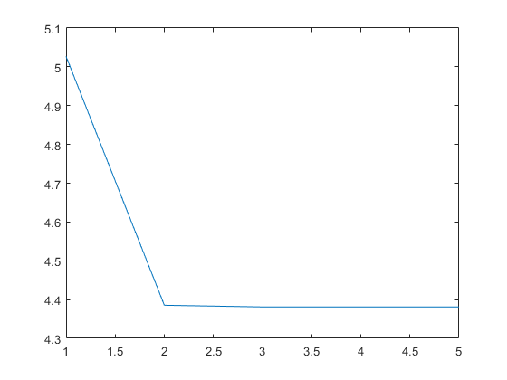

Contents
- performing analysis on sy1
- creating input image and image mask
- plotting initial image
- introducing noise
- modifying image for better k-means classification
- k-means initialization (repeat till we get -1 as a mean and with no warnings of non-convergence under 100 iterations)
- changing data format to operate FCM, keeping binary labelling
- performing fcm
- plotting fcm images and obj_func vs iterations
- displaying accuracy of fcm
- performing fcm_s
- plotting fcm_s images and obj_func vs iterations
- displaying accuracy of fcm_s
- performing fcm_s1
- plotting fcm_s1 images and obj_func vs iterations
- displaying accuracy of fcm_s1
- performing fcm_en
- plotting fcm_en images and obj_func vs iterations
- displaying accuracy of fcm_en
- performing fgfcm
- plotting fcm_fgfcm images and obj_func vs iterations
- displaying accuracy of fgfcm
- performing frfcm
- plotting frfcm images and obj_func vs iterations
- displaying mse of frfcm
- defining functions
- main loop
- compute membership matrix U according to cluster centers
- median filtering
clear; clc; close all; % load('../data/assignmentSegmentBrain.mat');
performing analysis on sy1
input_image = imread('../data/sy1.bmp');
input_imagefr = input_image;
creating input image and image mask
input_image = rgb2gray(input_image);
input_image = cast(input_image,'double'); input_image=input_image./256; imageMask=ones(size(input_image)); % imageMask=zeros(size(input_image)); % imageMask(input_image~=0) = 1; %input_image = imageData.*imageMask; %imdb=imageData.*imageMask; [m, n] = size(input_image);
plotting initial image
figure(); imshow(input_image);
introducing noise
input_image_noisy=imnoise(input_image,'gaussian',0.001).*imageMask; input_image_noisyfr=imnoise(input_imagefr,'gaussian',0.03); imshow(input_image_noisy);
modifying image for better k-means classification
cmp = ones(size(imageMask)) - imageMask; cmp = cmp*(-1); res = input_image; res = res + cmp;
k-means initialization (repeat till we get -1 as a mean and with no warnings of non-convergence under 100 iterations)
[init_labels, init_means] = kmeans(reshape(input_image_noisy, [m*n, 1]), 3); % while(true) % lastwarn(''); % [init_labels, init_means] = kmeans(reshape(res, [m*n, 1]), 3); % [warnMsg, warnId] = lastwarn; % if ((isempty(warnMsg)) && (any(init_means(:) == -1))) % break; % end % end init_labels = reshape(init_labels,[m,n]); % plotting k-means image k_means_img = zeros(m,n); for k = 1:3 k_means_img(init_labels == k) = init_means(k); end figure(); imshow(k_means_img);
changing data format to operate FCM, keeping binary labelling
means = []; memberships = []; for k=1:3 if (init_means(k) ~= -1) mean = init_means(k); means = [means; mean]; tmp = zeros(m, n); tmp(init_labels == k) = 1; memberships = cat(3, memberships, tmp); end end
performing fcm
q = 2; [img_fcm, means_fcm, memberships_fcm, obj_vals_fcm, n_iter_fcm] = fcm(input_image_noisy, q, means, imageMask, memberships);
plotting fcm images and obj_func vs iterations
for k = 1:3 figure(); imshow(img_fcm(:,:,k)); end figure(); plot(obj_vals_fcm);
displaying accuracy of fcm
labelled_img_fcm = get_labelled_img(img_fcm, means_fcm); mse_fcm = get_accuracy(input_image,labelled_img_fcm); imshow(labelled_img_fcm); display(mse_fcm);
mse_fcm = 498.3041
performing fcm_s
q = 2; alpha = 1; [img_fcm_s, means_fcm_s, memberships_fcm_s, obj_vals_fcm_s, n_iter_fcm_s] = fcm_s(input_image_noisy, q, alpha, means, imageMask, memberships,3);
plotting fcm_s images and obj_func vs iterations
for k = 1:3 figure(); imshow(img_fcm_s(:,:,k)); end figure(); plot(obj_vals_fcm_s);
displaying accuracy of fcm_s
labelled_img_fcm_s = get_labelled_img(img_fcm_s, means_fcm_s); mse_fcm_s = get_accuracy(input_image,labelled_img_fcm_s); imshow(labelled_img_fcm_s); display(mse_fcm_s);
mse_fcm_s = 76.0139
performing fcm_s1
q = 2; alpha = 1; [img_fcm_s1, means_fcm_s1, memberships_fcm_s1, obj_vals_fcm_s1, n_iter_fcm_s1] = fcm_s1(input_image_noisy, q, alpha, means, imageMask, memberships,3);
plotting fcm_s1 images and obj_func vs iterations
for k = 1:3 figure(); imshow(img_fcm_s1(:,:,k)); end figure(); plot(obj_vals_fcm_s1);

displaying accuracy of fcm_s1
labelled_img_fcm_s1 = get_labelled_img(img_fcm_s1, means_fcm_s1); mse_fcm_s1 = get_accuracy(input_image,labelled_img_fcm_s1); imshow(labelled_img_fcm_s1); display(mse_fcm_s1);
mse_fcm_s1 = 72.0740
performing fcm_en
q = 2; beta = 1; xp=input_image; input_image_mean = sum(sum(input_image))/sum(sum(imageMask)); wts=weights(3); wb=conv2(input_image,wts,'same'); input_image_en = (input_image + beta.*(wb.*imageMask))./(1+beta); % % modifying inputs res_en = input_image_en; % res_en = res_en + cmp; [init_labels_en, init_means_en] = kmeans(reshape(res_en, [m*n, 1]), 3); % while(true) % lastwarn(''); % [init_labels_en, init_means_en] = kmeans(reshape(res_en, [m*n, 1]), 4); % [warnMsg, warnId] = lastwarn; % if ((isempty(warnMsg)) && (any(init_means(:) == -1))) % break; % end % end init_labels_en = reshape(init_labels_en,[m,n]); means_en = []; memberships_en = []; for k=1:3 if (init_means_en(k) ~= -1) mean_en = init_means_en(k); means_en = [means_en; mean_en]; tmp = zeros(m, n); tmp(init_labels_en == k) = 1; memberships_en = cat(3, memberships_en, tmp); end end % performing fcm_en [img_fcm_en, means_fcm_en, memberships_fcm_en, obj_vals_fcm_en, n_iter_fcm_en] = fcm(input_image_en, q, means_en, imageMask, memberships_en);
plotting fcm_en images and obj_func vs iterations
for k = 1:3 figure(); imshow(img_fcm_en(:,:,k)); end figure(); plot(obj_vals_fcm_en);
displaying accuracy of fcm_en
labelled_img_fcm_en = get_labelled_img(img_fcm_en, means_fcm_en); mse_fcm_en = get_accuracy(input_image,labelled_img_fcm_en); imshow(labelled_img_fcm_en); display(mse_fcm_en);
mse_fcm_en =
0.5691
performing fgfcm
q = 2; beta = 1; lambda_s=1; lambda_g=1; N=51; X=(N-1)/2; wts=weights(N); wb=conv2(input_image,wts,'same'); wbs=conv2(input_image.^2,wts,'same'); sig=input_image.^2+wbs-2*input_image.*wb; Sijxj=zeros(size(input_image)); Sij=zeros(size(input_image)); for i = -X:X for j = -X:X if i==0 && j==0 break; end xi1 = (circshift(input_image,[i j])); x1=(xi1-input_image).^2; c=ones(size(input_image))*exp(1); ss=c.^(-max(abs(i),abs(j))/lambda_s); sij1=c.^(-x1./(lambda_g*sig)).*ss; Sijxj=Sijxj+sij1.*xi1; Sij=Sij+sij1; end end input_image_fgfcm=Sijxj./Sij; input_image_fgfcm(isnan(input_image_fgfcm))=0; figure(); % imshow(input_image_fgfcm); %------------------------------------------------------------------------------------------- % modifying inputs res_fgfcm = input_image_fgfcm; % res_fgfcm = res_fgfcm + cmp; [init_labels_fgfcm, init_means_fgfcm] = kmeans(reshape(res_fgfcm, [m*n, 1]), 4); % while(true) % lastwarn(''); % [init_labels_fgfcm, init_means_fgfcm] = kmeans(reshape(res_fgfcm, [m*n, 1]), 4); % [warnMsg, warnId] = lastwarn; % if ((isempty(warnMsg)) && (any(init_means(:) == -1))) % break; % end % end init_labels_fgfcm = reshape(init_labels_fgfcm,[m,n]); % disp('atleast'); means_fgfcm = []; memberships_fgfcm = []; for k=1:4 if (init_means_fgfcm(k) ~= -1) mean_fgfcm = init_means_fgfcm(k); means_fgfcm = [means_fgfcm; mean_fgfcm]; tmp = zeros(m, n); tmp(init_labels_fgfcm == k) = 1; memberships_fgfcm = cat(3, memberships_fgfcm, tmp); end end % performing fcm_fgfcm % disp('before'); [img_fcm_fgfcm, means_fcm_fgfcm, memberships_fcm_fgfcm, obj_vals_fcm_fgfcm, n_iter_fcm_fgfcm] = fcm(input_image_fgfcm, q, means_fgfcm, imageMask, memberships_fgfcm);
plotting fcm_fgfcm images and obj_func vs iterations
st='../results/lg_'; disp('after');
for k = 1:3 figure(); imshow(img_fcm_fgfcm(:,:,k)); % saveas(gcf,strcat(st,num2str(lambda_g),'_1.png')); end figure(); plot(obj_vals_fcm_fgfcm); % saveas(gcf,strcat(st,num2str(lambda_g),'_plot.png'));
displaying accuracy of fgfcm
labelled_img_fcm_fgfcm = get_labelled_img(img_fcm_fgfcm, means_fcm_fgfcm); mse_fcm_fgfcm = get_accuracy(input_image,labelled_img_fcm_fgfcm); imshow(labelled_img_fcm_fgfcm); display(mse_fcm_fgfcm);
mse_fcm_fgfcm =
0.9184
performing frfcm
q =2;
cluster=3;
se=3;
w_size=3;
[center1,U1,obj_vals_frfcm,t1]=FRFCM(double(input_image_noisyfr),cluster,se,w_size,q);
f_seg=fcm_image(input_imagefr,U1,center1);
figure,imshow(f_seg);title('segmentated result');
plotting frfcm images and obj_func vs iterations
figure(); plot(obj_vals_frfcm);
displaying mse of frfcm
mse_frfcm = get_accuracy(input_imagefr./256,f_seg./256); display(mse_frfcm);
mse_frfcm =
11
defining functions
function wts = weights(n) x=n^2-1; wts=ones(n,n)*(1/x); t=(n+1)/2; wts(t,t)=0; end function objfunc = get_objfunc_fcm(img, img_mask, q, means, memberships) objfunc = 0; for k = 1:length(means) mean = means(k); membership = memberships(:,:,k); % XX=mean.*img_mask; %disp(((img - mean.*img_mask).^2)); objfunc = objfunc + sum(sum((membership.^q).*((img.*img_mask - mean.*img_mask).^2))); end end function means = get_means_fcm(img, img_mask, q, means, memberships) for k = 1:length(means) membership = memberships(:,:,k); mean = sum(sum((membership.^q).*(img.*img_mask)))/sum(sum(membership.^q)); means(k) = mean; end end function memberships = get_memberships_fcm(img, img_mask, q, means, memberships) for k = 1:length(means) mean = means(k); d = ((img) - (mean)).^2; membership = (1./d).^(1/(q-1)); membership(img_mask==0) = 0; memberships(:,:,k) = membership; end for i = 1:size(img,1) for j = 1:size(img,2) %if(img_mask(i,j)==1) memberships(i,j,:) = memberships(i,j,:)/sum(memberships(i,j,:)); %end end end end function [img, means, memberships, obj_vals, n_iter] = fcm(input_image, q, means, imageMask, memberships) prev_objfunc = get_objfunc_fcm(input_image, imageMask, q, means, memberships); n_iter = 0; obj_vals = []; obj_vals = [obj_vals prev_objfunc]; while(true) n_iter = n_iter + 1; means = get_means_fcm(input_image, imageMask, q, means, memberships); memberships = get_memberships_fcm(input_image, imageMask, q, means, memberships); memberships(isnan(memberships))=0; curr_objfunc = get_objfunc_fcm(input_image, imageMask, q, means, memberships); obj_vals = [obj_vals curr_objfunc]; if abs(curr_objfunc - prev_objfunc) < 0.00001 || n_iter >= 100 break; end prev_objfunc = curr_objfunc; end img = zeros(size(input_image,1),size(input_image,2),length(means)); for i = 1:size(input_image,1) for j = 1:size(input_image,2) if imageMask(i,j)==1 [~,max_ind] = max(memberships(i,j,:)); img(i,j,max_ind) = 1; end end end end function objfunc = get_objfunc_fcm_s(img, img_mask, q, alpha, means, memberships,wb,wbs) objfunc = 0; for k = 1:length(means) mean = means(k); membership = memberships(:,:,k); objfunc = objfunc + sum(sum((membership.^q).*((img.*img_mask - mean.*img_mask).^2))); vi=mean.*img_mask; dj=vi.^2+wbs-2*vi.*wb; objfunc = objfunc + ( alpha * sum(sum((membership.^q).*(dj))) ); %{ x1 = (circshift(img,1,1)); x2 = (circshift(img,-1,1)); x3 = (circshift(img,1,2)); x4 = (circshift(img,-1,2)); objfunc = objfunc + ( alpha / 4 * sum(sum((membership.^q).*((x1.*img_mask - mean.*img_mask).^2))) ); objfunc = objfunc + ( alpha / 4 * sum(sum((membership.^q).*((x2.*img_mask - mean.*img_mask).^2))) ); objfunc = objfunc + ( alpha / 4 * sum(sum((membership.^q).*((x3.*img_mask - mean.*img_mask).^2))) ); objfunc = objfunc + ( alpha / 4 * sum(sum((membership.^q).*((x4.*img_mask - mean.*img_mask).^2))) ); %} end end function means = get_means_fcm_s(img, img_mask, q, alpha, means, memberships,wb,wbs) for k = 1:length(means) membership = memberships(:,:,k); mean = sum(sum((membership.^q).*((img + (alpha).*wb).*img_mask)))/((1+alpha)*sum(sum(membership.^q))); %{ x1 = (circshift(img,1,1)); x2 = (circshift(img,-1,1)); x3 = (circshift(img,1,2)); x4 = (circshift(img,-1,2)); neighbor_sum = x1+x2+x3+x4; mean = sum(sum((membership.^q).*((img + (alpha/4).*neighbor_sum).*img_mask)))/((1+alpha)*sum(sum(membership.^q))); %mean = sum(sum((membership.^q).*(img.*img_mask)))/sum(sum(membership.^q)); %} means(k) = mean; end end function memberships = get_memberships_fcm_s(img, img_mask, q, alpha, means, memberships,wb,wbs) for k = 1:length(means) mean = means(k); d = (((img.*img_mask) - (mean.*img_mask)).^2); vi=mean.*img_mask; dj=vi.^2+wbs-2*vi.*wb; d = d + ( (alpha).*(dj) ); %{ x1 = (circshift(img,1,1)); x2 = (circshift(img,-1,1)); x3 = (circshift(img,1,2)); x4 = (circshift(img,-1,2)); d = d + ( (alpha / 4).*((x1.*img_mask - mean.*img_mask).^2) ); d = d + ( (alpha / 4).*((x2.*img_mask - mean.*img_mask).^2) ); d = d + ( (alpha / 4).*((x3.*img_mask - mean.*img_mask).^2) ); d = d + ( (alpha / 4).*((x4.*img_mask - mean.*img_mask).^2) ); %} membership = (1./d).^(1/(q-1)); membership(img_mask==0) = 0; memberships(:,:,k) = membership; end for i = 1:size(img,1) for j = 1:size(img,2) if(img_mask(i,j)==1) memberships(i,j,:) = memberships(i,j,:)/sum(memberships(i,j,:)); end end end end function [img, means, memberships, obj_vals, n_iter] = fcm_s(input_image, q, alpha, means, imageMask, memberships,n) wts=weights(n); wb=conv2(input_image,wts,'same'); wbs=conv2(input_image.^2,wts,'same'); prev_objfunc = get_objfunc_fcm_s(input_image, imageMask, q, alpha, means, memberships,wb,wbs); n_iter = 0; obj_vals = []; obj_vals = [obj_vals prev_objfunc]; while(true) n_iter = n_iter + 1; means = get_means_fcm_s(input_image, imageMask, q, alpha, means, memberships,wb,wbs); memberships = get_memberships_fcm_s(input_image, imageMask, q, alpha, means, memberships,wb,wbs); curr_objfunc = get_objfunc_fcm_s(input_image, imageMask, q, alpha, means, memberships,wb,wbs); obj_vals = [obj_vals curr_objfunc]; if abs(curr_objfunc - prev_objfunc) < 0.00001 || n_iter >= 100 break; end prev_objfunc = curr_objfunc; end img = zeros(size(input_image,1),size(input_image,2),length(means)); for i = 1:size(input_image,1) for j = 1:size(input_image,2) if imageMask(i,j)==1 [~,max_ind] = max(memberships(i,j,:)); img(i,j,max_ind) = 1; end end end end function objfunc = get_objfunc_fcm_s1(img, img_mask, q, alpha, means, memberships,wb) objfunc = 0; for k = 1:length(means) mean = means(k); membership = memberships(:,:,k); objfunc = objfunc + sum(sum((membership.^q).*((img.*img_mask - mean.*img_mask).^2))); objfunc = objfunc + ( alpha * sum(sum((membership.^q).*((wb.*img_mask - mean.*img_mask).^2))) ); end end function means = get_means_fcm_s1(img, img_mask, q, alpha, means, memberships,wb) for k = 1:length(means) membership = memberships(:,:,k); mean = sum(sum((membership.^q).*((img + (alpha).*wb).*img_mask)))/((1+alpha)*sum(sum(membership.^q))); means(k) = mean; end end function memberships = get_memberships_fcm_s1(img, img_mask, q, alpha, means, memberships,wb) for k = 1:length(means) mean = means(k); d = (((img.*img_mask) - (mean.*img_mask)).^2); d = d + ( (alpha).*((wb.*img_mask - mean.*img_mask).^2) ); membership = (1./d).^(1/(q-1)); membership(img_mask==0) = 0; memberships(:,:,k) = membership; end for i = 1:size(img,1) for j = 1:size(img,2) if(img_mask(i,j)==1) memberships(i,j,:) = memberships(i,j,:)/sum(memberships(i,j,:)); end end end end function [img, means, memberships, obj_vals, n_iter] = fcm_s1(input_image, q, alpha, means, imageMask, memberships,n) wts=weights(n); wb=conv2(input_image,wts,'same'); prev_objfunc = get_objfunc_fcm_s1(input_image, imageMask, q, alpha, means, memberships,wb); n_iter = 0; obj_vals = []; obj_vals = [obj_vals prev_objfunc]; while(true) n_iter = n_iter + 1; means = get_means_fcm_s1(input_image, imageMask, q, alpha, means, memberships,wb); memberships = get_memberships_fcm_s1(input_image, imageMask, q, alpha, means, memberships,wb); curr_objfunc = get_objfunc_fcm_s1(input_image, imageMask, q, alpha, means, memberships,wb); obj_vals = [obj_vals curr_objfunc]; if abs(curr_objfunc - prev_objfunc) < 0.00001 || n_iter >= 100 break; end prev_objfunc = curr_objfunc; end img = zeros(size(input_image,1),size(input_image,2),length(means)); for i = 1:size(input_image,1) for j = 1:size(input_image,2) if imageMask(i,j)==1 [~,max_ind] = max(memberships(i,j,:)); img(i,j,max_ind) = 1; end end end end % function img = get_labelled_img(input_image,means,memberships) % img = zeros(size(input_image,1),size(input_image,2)); % % for k = 1:length(means) % membership = memberships(:,:,k); % mean = means(k); % img = img + membership.*mean; % end % end function img = get_labelled_img(input_image,means) img = zeros(size(input_image,1),size(input_image,2)); for k = 1:length(means) inpt = input_image(:,:,k); mean = means(k); img = img + inpt.*mean; end end function acc = get_accuracy(img1, img2) acc = sum(sum((img1-img2).^2)); end function gx=fcm_image(f,U,center) [m,n]=size(f); [~,idx_f]=max(U); imput_f=reshape(idx_f,[m n]); imput_ff=zeros(m,n); for k=1:length(center(:,1)) t=(imput_f==k).*center(k); imput_ff=imput_ff+t; end gx=uint8(imput_ff); end function [center, U, obj_U, iter_n]=FRFCM(data,cluster_n,diameter,w_size,q)
obj_U = zeros(100, 1); data=w_recons_CO(data,strel('square',diameter)); row=size(data, 1);col=size(data,2); data_n = row*col; data=data(:); data_u=unique(data(:)); n_r=size(data_u,1); U=initfcm(cluster_n,n_r); sum_U{1}=double(U>0.5);sum_U{2}=sum_U{1}; N_p=zeros(length(data_u),1); for i=1:length(data_u) N_p(i)=sum(data==data_u(i)); end Num=ones(cluster_n,1)*N_p';
main loop
dist=zeros(cluster_n,n_r);dist2=zeros(cluster_n,data_n); for w= 1:100 mf = Num.*(U.^q); center = mf*data_u./((ones(size(data, 2), 1)*sum(mf'))'); for k=1: size(center, 1) dist(k, :)=abs(center(k)-data_u)'; end tmp=dist.^2; h1=(tmp+eps).^(-1/(q-1)); U=(h1)./(ones(cluster_n,1)*(sum(h1))+eps); if w>2 sum_U{w}=double(U>0.5); obj_U(w)=sum(sum(abs(sum_U{w}-sum_U{w-1}))); if obj_U(w)==0,break; end end end iter_n = w;
compute membership matrix U according to cluster centers
for k2=1: size(center, 1) dist2(k2, :)=abs(center(k2)-data)'; end tmp =dist2+eps; h1=(tmp).^(-1/(q-1)); U=(h1)./(ones(cluster_n,1)*(sum(h1))+eps);
median filtering
for k3=1: size(center, 1) U1= U (k3,:); U1=reshape(U1,[row,col]); UU=medfilt2(U1,[w_size,w_size]); GG(k3,:)=UU(:); end U=GG./(ones(cluster_n,1)*(sum(GG))+eps);
end function fobrcbr=w_recons_CO(f,se) fe=imerode(f,se); fobr=imreconstruct(fe,f); fobrc=imcomplement(fobr); fobrce=imerode(fobrc,se); fobrcbr=imcomplement(imreconstruct(fobrce,fobrc)); end